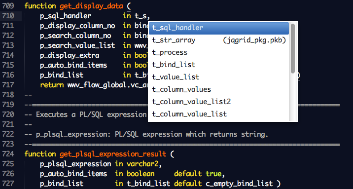
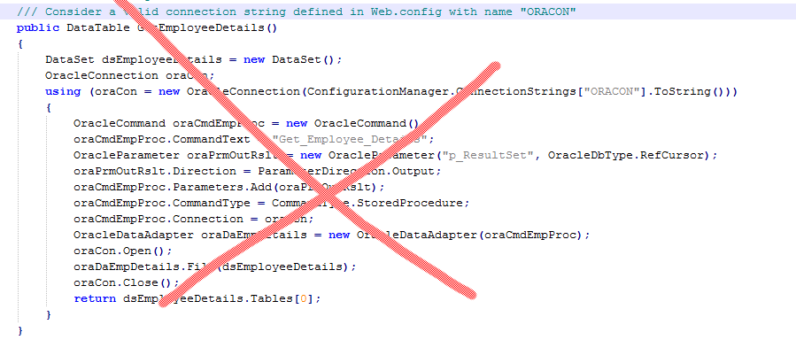

PL/SQL: The Good Parts
By Morten Braten, inspired by Douglas Crockford
by Morten Braten
By Morten Braten, inspired by Douglas Crockford
I do not work for Oracle. I don't own Oracle stock. These are my own opinions. Yada yada yada.
This is not intended as an introduction to PL/SQL, but rather an overview of features you should consider if you want to maximize your enjoyment of programming in the Oracle Database. Also, this is not an exhaustive list of all features, it's simply the ones I personally use frequently.
In a world where programming languages and frameworks come and go, I like the simplicity and stability of PL/SQL. I have worked with it for almost 20 years, and I still have code that was originally written for Oracle 7 that runs happily in production to this day.
If used properly and to its full capability, PL/SQL is a powerful, elegant and fun tool. Let's see how...

| Feature | PL/SQL | T-SQL | MySQL |
|---|---|---|---|
| Procedures | 1989 | 1993 | 2005 |
| Functions | 1989 | 2000 | 2005 |
| Exceptions | 1989 | 2005 | N/A |
| Packages | 1989 | N/A | N/A |

Separate interface (specification) from implementation (body)
create or replace package invoice_pkg
...
create or replace package body invoice_pkg
...
Define constant values in your packages. Use them to avoid hardcoding literal values, and to make your code more readable.
g_status_draft constant varchar2(20) := 'DRAFT';
g_status_invoiced constant varchar2(20) := 'INVOICED';
g_status_cancelled constant varchar2(20) := 'CANCELLED';
if (l_invoice.status = g_status_cancelled) then ...
Same name for multiple functions or procedures, with different parameters. Use it to build better and more flexible APIs.
function to_str (p_date in date) return varchar2;
function to_str (p_boolean in boolean) return varchar2;
function to_str (p_number in number) return varchar2;
Use them to build better APIs by setting sensible defaults for rarely-used parameters. Choose one syntax (default or :=) and stick with it.
function get_vat (p_amount in number,
p_vat_rate in number default 0.25,
p_special_rule in boolean := false)
Use them to improve readability of code, where necessary (especially useful when passing booleans or null values).
invoice_pkg.create_credit_note (
p_invoice_id => 1234,
p_include_vat => false,
p_customer_remarks => null
);
User-defined record types can be extended without breaking existing code. Use them to pass around multiple values not directly mapped to a table row. Record types can be nested.
type t_url is record (
protocol varchar2(10),
link_address t_address
);
function get_url (...) return t_url;
if get_url().protocol = 'http' then ...
Check a value against a set of values
if l_invoice.status in ('DRAFT', 'APPROVED') then
...
end if;
Replace multiple if/elsif with a single case statement. When clause can be simple or complex.
l_color := case
when l_invoice.status = g_status_draft then 'lightgrey'
when l_invoice.status = g_status_paid
and l_invoice.amount is not null then 'green'
else 'red'
end;
Using coalesce instead of nvl allows you to specify more than two arguments, and enjoy short circuit evaluation
l_tax_code := coalesce (
l_invoice.tax,
l_config.default_tax,
get_tax() -- not called unless other params are null
);
If you can make sense of the crazy regex syntax, regular expressions are very powerful, and well supported in both SQL and PL/SQL via regexp_like, regexp_replace, regexp_instr, and regexp_substr.
-- get Anderson, Andersen, or Andersan
select last_name
from contacts
where regexp_like (last_name, 'Anders(o|e|a)n');
Dates can be treated as numbers, allowing for addition and subtraction without any special functions. Several specialized date functions exist.
l_due_date := l_invoice_date + 14;
l_days_since_invoice := sysdate - l_invoice_date;
l_due_date := add_months (sysdate, 2); -- 2 months from now
l_due_date := last_day (sysdate); -- last day of the month
l_year := round(sysdate, 'YEAR'); -- get year from date
Using to_char, to_number and to_date you can convert between values easily. Always specify an explicit format mask.
l_date_str := to_char (sysdate, 'dd.mm.yyyy hh24:mi:ss') ;
l_amount := to_number (p_input_str, '999.99');
l_date_from_xml :=
to_date ('2002-05-30T09:00:00',
'yyyy-mm-dd"T"hh24:mi:ss'
);
Using a string as a key to look up another string.
type t_countries is table of varchar2(255)
index by varchar2(2);
l_countries t_countries;
l_countries ('UK') := 'United Kingdom';
l_countries ('US') := 'United States';
l_countries ('ES') := 'Spain';
Use set operations (union, intersect and minus) on PL/SQL arrays. More...
l_engineers := t_employee_tab ('John', 'Joe', 'Sam');
l_poorly_paid := t_employee_tab ('Frank', 'Sam', 'Tom');
l_poorly_paid_engineers :=
l_engineers multiset intersect l_poorly_paid;
Use pipelined functions to return table-like result sets from PL/SQL code. Use it to perform complex calculations, merge data from multiple sources, or get data from external sources (such as web services).
function get_search_results (p_search_string in varchar2)
return t_search_result_tab pipelined;
select * from table(search_pkg.get_search_results(...));
(This is a Big Deal and is what makes PL/SQL such a good choice for working with the database)
Programming languages that run outside the database must manage connections, map data types and marshal calls. Not so with PL/SQL!
All SQL data types are also available in PL/SQL, and all advanced SQL features (such as analytic functions) are available in PL/SQL.
select empno, sal,
dense_rank() over (
partition by deptno order by sal desc nulls last
) as dense_rank
from emp
order by 2, dense_rank
When you code DML statements in PL/SQL, variables and parameters are automatically turned into bind variables. There is no need to define and bind the variables like you would in a programming language outside the database.
update invoice
set invoice_title = l_invoice_title
where invoice_id = p_invoice_id;
Anchor variable declarations to column types. Use it so you don't have to rewrite code when column definitions change.
l_invoice_status invoice.status%type;
l_invoice_amount invoice.total_amount%type;
Anchor variable declarations to table rows. Use it for shorter, more elegant code. Notice also the "set row" syntax for updates.
l_invoice invoice%rowtype;
function get_invoice (...) return invoice%rowtype;
l_invoice := get_invoice (p_invoice_id => 555);
procedure set_invoice (p_row in invoice%rowtype);
set_invoice (l_invoice);
update invoice set row = p_row where ...;
Makes it super-easy to process rows.
for l_rec in (select * from emp) loop
htp.p('<li>' || l_rec.ename || '</li>');
end loop;
Non-trivial queries should be declared in the declaration section. They can also be declared as package-level cursors to be reused in multiple subroutines.
declare
cursor l_complex_query_cursor
is
select ... ;
begin
for l_rec in l_complex_query_cursor loop
...
Do not use a cursor with row-by-row (aka "slow-by-slow") processing if a single, set-based SQL statement can do the job. Set-based operations perform much better. If cursors can't be avoided, look into bulk collect.
update invoice
set due_date = due_date + 1
where status != g_status_posted;
Run dynamic SQL and PL/SQL -- but beware SQL injection! Use dbms_assert for sanity checks. Use dbms_sql for more complex cases.
execute immediate
'begin ' ||
dbms_assert.sql_object_name(l_my_proc_name) || ' (:b1); ' ||
'end;'
using l_my_value;
XML generation, transformation, validation and parsing is very well supported in the database.
l_xml xmltype;
l_xml := xmltype ('<invoice>...</invoice>');
l_str := l_xml.extract ('//invoice/currency/text()')
.getStringVal();
l_new_xml := l_xml.transform (l_xsl_stylesheet);
Oracle 12 has native JSON support, Apex 5 has apex_json package.
-- Oracle 12
select i.my_json_column.CustomerData.CreditRating
from invoice i
-- Oracle 10/11 with Apex 5
apex_json.parse(l_values, '{"items":[1,2,{"foo":42}]}');
l_val := apex_json.get_varchar2(
p_path=>'items[%d].foo', p0 => 3, p_values => l_values));
There are literally hundreds of built-in PL/SQL packages. Reference
dbms_application_info, dbms_assert, dbms_crypto, ...
dbms_job, dbms_ldap, dbms_output, ...
utl_http, utl_tcp, utl_smtp, utl_url, ...
utl_encode, utl_file, utl_match, ...
apex_json, apex_util, apex_web_service, apex_zip, ...
owa_cookie, owa_util, htp, htf, ...
Jobs are perfect for any long-running process, running either at specified intervals or as a one-time job (no interval). See also the dbms_parallel_execute package.
declare
l_job_id number;
begin
dbms_job.submit (l_job_id,
what => 'invoice_pkg.process_payments;',
interval => 'sysdate+1'); -- null to run only once
end;
When connected to an HTTP gateway*, PL/SQL can generate web content directly from the database via the htp (HyperText Procedures) package.
htp.p('<div id="my-widget">Hello World</div>');
* Supported options include the Embedded PL/SQL Gateway aka dbms_epg, Apache mod_plsql, or Oracle REST Data Services aka ORDS.
Apex is a modern web development framework built on top of the PL/SQL Web Toolkit. At its core, it consists of nothing more than application metadata in tables and large amounts of PL/SQL code.
As of Apex 4, it was said to consist of approximately 425 tables and 230 PL/SQL packages containing 425,000+ lines of code. Apex 5 is even bigger. Apex is a good example of PL/SQL goodness.
return statementLog debug info and errors into a log table using autonomous transactions, not interfering with your main transaction.
procedure log (p_text in varchar2)
as
pragma autonomous_transaction;
begin
insert into log (...) values (...);
commit;
end;
Create an assert procedure and use it to validate inputs and outputs.
procedure assert (p_condition in boolean, p_message in varchar2)
...
if not nvl(p_condition, false) then
raise_application_error (-20000, p_message);
end if;
...
assert_pkg.assert (p_amount is not null,
'Invoice amount must be specified!');
assert_pkg.assert (p_due_date > sysdate, 'Invalid due date!');
Wrap code in block that has exception section. Only handle specific, "expected" errors. Unhandled errors propagate to caller.
begin
do_stuff();
exception
when no_data_found then
l_returnvalue := null;
end;
Avoid using "WHEN OTHERS" unless you know what you are doing. There are some legitimate uses for it, though.
begin
l_returnvalue := to_number (p_input_str);
exception
when others then
l_returnvalue := null; -- ignore invalid input
end;
The backtrace is a trace from where the exception was thrown to where the backtrace was examined.
-- Oracle 10 and 11: backtrace as simple string
l_error_backtrace := dbms_utility.format_error_backtrace;
-- Oracle 12: backtrace as set of API functions
utl_call_stack.backtrace_depth
utl_call_stack.backtrace_line()
utl_call_stack.backtrace_unit()
Query the data dictionary to find errors and invalid objects.
select * from user_errors;
select * from user_objects where status != 'VALID';
In addition to compiler errors, you can also turn on warnings.
alter session set plsql_warnings = 'ENABLE:ALL';
alter package invoice_pkg compile;
select * from user_errors;
Actually, PL/SQL does not have too many bad parts (and unlike Javascript, it does not have many bizarre quirks, either), but it just seems proper to devote a couple of slides to its limitations and annoyances. There's always room for improvement, right?
These are only recommendations (but they are good recommendations!). Whatever you choose, be consistent.
Use a decent editor (Sublime Text, Notepad++, SQL Developer, etc) with PL/SQL syntax highlighting and code completion
Sublime Text can be used on both Windows and OS X. Plugins provide syntax highlighting, code completion and a build system for PL/SQL. See notes on using Sublime Text with PL/SQL and download ST2 package for PL/SQL on Github.
You will become much more productive if you learn how to use sqlplus to run scripts for deployment, patching, etc. See also the new sqlcl.
sqlplus user@db
@your_install_script.sql
Embed single quotes in literal strings without having to resort to double, triple or sometimes quadruple quote characters.
l_js := q'[var el = document.getElementById('foo');]';
Use the power of SQL to find strings in the source code, and to analyze it in various ways.
select *
from user_source
where lower(text) like '%some_function%'
order by type, name, line;
select count(*)
from user_source;
Use the information in the data dictionary to quickly generate code.
select 'drop table ' || table_name || ' purge;'
from user_tables
where table_name like 'TEST%'
order by table_name;
drop table TEST_01 purge;
drop table TEST_STUFF purge;
drop table TEST_XYZ purge;
The database automatically tracks dependencies between objects, such as database tables and your PL/SQL packages.
select * from user_dependencies;
Using PL/Scope, information about identifier types, usages (declaration, definition, reference, call, assigment) and the location of each usage in the source code is collected into data dictionary views.
alter session set plscope_settings = 'IDENTIFIERS:ALL';
alter package invoice_pkg compile;
select * from user_identifiers;
Example: Find all variables that are declared without an "l_" prefix, and therefore in violation of project's coding conventions.
select *
from user_identifiers
where object_type = 'PACKAGE BODY'
and usage = 'DECLARATION'
and type = 'VARIABLE'
and name not like 'L_%';
Toggle what gets compiled via $if, $then, etc. There are many uses for this.
$if debug_pkg.g_debug_enabled $then
dbms_output.put_line (l_value);
$else
null;
$end
Make sure your code is always optimized when you deploy it.
alter session set plsql_optimize_level = 2;
@run_your_install_script.sql
select *
from user_plsql_object_settings;
Use existing database features, built-in packages, and third-party libraries.
Do it in SQL.
If you can't do it in SQL, do it in PL/SQL.
If you can't do it in PL/SQL, do it in Java (or whatever).